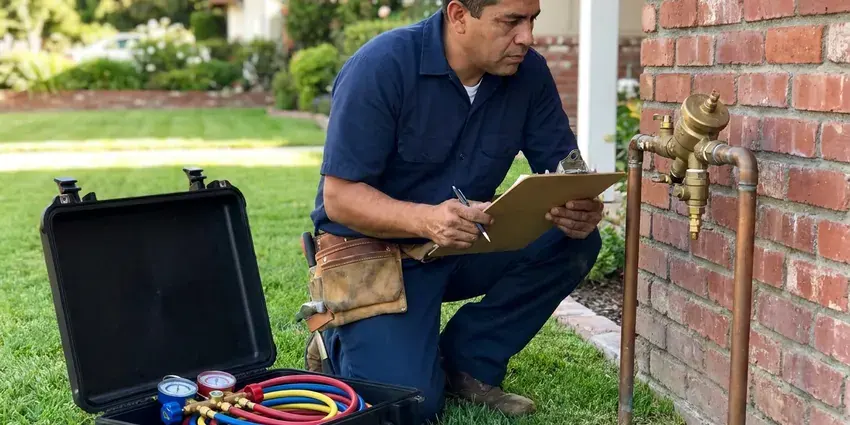

Clogged Sewer Line in Layton, UT
Sewage coming up in the shower in Layton, UT? Quit using water and give us a call. We clear the main and clean up after.
- Clearing Warranty
- Cleanout Installs
- Upfront Pricing
- 24 Hour Backup Response

Roots in the Sewer Again in Layton, UT?
You see the inside of your sewer on screen before we talk about any repair.
Root and Wipe Clogs Cleared in Layton, UT
BPK Plumbing clears the main line that carries all of your home's waste to the city sewer or septic tank. We go in through the cleanout. Without one, we pull a toilet or use the vent. The machine cuts roots and debris, and the camera confirms the pipe is open from the house to the street.
Work we handle every week:
- Wipe and grease plug removal
- Clearing through a vent or toilet when no cleanout exists
- Root cutting with drum sewer machines

Additional Plumbing Maintenance Services in Layton, UT
Our maintenance and specialty plumbing services in Layton, UT catch small problems before they become emergencies.


Customers
Why Choose BPK Plumbing for Clogged Sewer Line in Layton, UT?
Our plumbers clear main lines every day. It is routine work for them. Each one knows how to open a pressurized cleanout without a mess, how to tell roots from grease by feel and when to switch tools.
- Clean Work, We contain spills, clean up the cleanout area and protect your floors.
- Heavy Equipment, Commercial sewer machines and jetters handle roots and grease that rental units cannot.
- Honest Advice, If cleaning is enough, that is what we recommend, with no push to replace.
Citywide Coverage
Our crews cover Layton, UT and the towns around it. Same trucks, same gear. From the center of town to the outer edges, a sewer tech can usually reach you the same day with a machine, a jetter and a camera on board.
Experienced Team
Our team handles commercial lines as well as homes. Grease lines are regular work. They work around business hours, and leave things clean for your staff.
Safety-First Approach
We call 811 before any digging. Every single time. Gas, electric and fiber lines get marked, and we hand dig near any mark so a sewer repair does not turn into a utility emergency.
Trusted Certified Layton Plumbing Services Professionals
At BPK Plumbing, we are proud to offer certified plumbing services throughout Layton, UT. Those papers on the wall mean something. Our plumbers hold recognized industry credentials, and they follow strict safety and quality rules on every repair, installation and maintenance call we run.
Call Us Now PHCC Plumbing Contractor Recognition
PHCC Plumbing Contractor Recognition Better Business Bureau (BBB) Accreditation
Better Business Bureau (BBB) Accreditation Angi Certified Pro
Angi Certified Pro ISO 9001 Quality Management Certification
ISO 9001 Quality Management CertificationWhat Our Sewer Line Service Covers in Layton, UT
Preventative Sewer Line Maintenance in Layton
Lines that clog from roots once a year can be cleaned before they clog. It saves you the emergency. BPK Plumbing sets up scheduled cutting or jetting for homes in Layton with older clay or cast iron, typically on a one- to two-year cycle based on regrowth. Each visit includes a quick camera check.

Emergency Sewer Backup Service in Layton, UT
Sewage coming up through a shower or floor drain needs attention right away. Stop using water. Our emergency crews stop the backup, clear the main and help with cleanup referrals. We document it for your claim.
Hydro-Jetting Services in Layton, UT
Jetting sends water at thousands of psi through a nozzle that sprays backward and drives itself down the pipe. It scrubs the whole wall. A cable punches a hole through a grease plug, while a jetter removes the grease, scale and fine roots coating the pipe so the next clog has nothing to start on. The camera goes in before the jetter. Badly cracked pipe gets a gentler approach.
Sewer Belly and Sagging Pipe Clogs in Layton, UT
Rocky ground can make sewer line and water service repairs more involved, and trenchless methods are often a good fit where digging is tough. A section of sewer pipe that sinks forms a belly. Water and solids sit in the dip. Over time that standing water collects paper and grease, and the line clogs at the same spot every few months no matter how often it gets cleaned. Our camera and locator show where the belly is and how deep it sits. A spot repair restores the slope.
Main Line vs. Branch Line Clogs in Layton, UT
One slow drain is a branch clog. Several slow drains is the main. Water rising in the shower when you flush is a strong sign the clog is past the point where those two lines join, which is why we ask which fixtures are acting up before we decide where to open the line. Starting in the right place matters.
Grease and Wipes Sewer Blockages in Layton, UT
Flushable wipes do not break down the way toilet paper does. Not even close. Mixed with grease that hardened in the main, they form a dense plug that a cable can poke a hole through but not fully remove from the pipe. Jetting scours the walls and flushes the debris downstream. Wipes belong in the garbage.
Main Line Hydro Jetting in Layton
A jetter cleans the full diameter of the pipe, not just a hole through the middle. That matters a lot. Water at thousands of psi cuts roots, grease and scale, and the rear-facing spray carries all of it downstream as the nozzle pulls itself along the line. We camera the pipe first so jetting only goes into lines that can take it. Many lines stay clear for years after.

Tree Root Sewer Clogs in Layton
Clay and older cast iron sewer pipe have a joint every few feet. Each joint is an opening. Roots from trees and shrubs push into the gaps and fill the pipe, so we cut them with a sewer machine fitted with root saws and then run a camera to see how much damage remains. Ongoing root problems may call for a treatment schedule or lining.
Clogged Sewer Line Help Near Me in Layton, UT
People in Layton call us for the same few reasons: roots, grease, wipes, a sagging pipe. We see all four every week. Each call starts with a few questions about which drains are affected, because that tells us whether the clog is in the main or a branch before we ever open a cleanout.
Being close matters on a sewer backup. Every minute adds to the mess. Our trucks run across Layton, UT with full equipment, so the first tech to arrive can clear the main, camera it and clean up without waiting on a second truck.
BPK Plumbing at a Glance
- Fully licensed plumbing team covering Layton, UT
- 24/7 emergency service with same-day scheduling
- Clear written estimates, no hidden fees
- 4.8-star rated by 470+ Utah customers
Layton Map
Layton Information
- Population
- 83,516
- Area codes
- 801/385/435
- Service area
- Layton and communities within 40 miles
- Nearby
- Ogden, Salt Lake City, West Valley City, Millcreek
Rocky ground can make sewer line and water service repairs more involved, and trenchless methods are often a good fit where digging is tough. Roots chasing moisture squeeze into any small gap they can find in Layton, UT, so clearing the line and checking it on camera beats waiting for sewage on the floor.
Talk to a Plumber
Call BPK Plumbing for reliable plumbing work done by licensed pros in Layton, UT.
Our Specialized Plumbing Services in Layton, UT
At BPK Plumbing, we handle the full list of plumbing services across Layton, UT. From leak detection to full system installs, our team works fast and charges fair prices on homes and commercial properties alike. Explore our core services below:


What Happens on a Sewer Call in Layton, UT
A sewer call in Layton follows three steps: clear, inspect, explain.
Describe the Backup
Call (385) 543-4073 and tell us which drains are backing up. Let us know if sewage reached the floor.
Clear the Main
We open the cleanout and clear the line with a sewer machine or jetter. Water confirms the fix.
Camera and Advise
We camera the line and show you the footage. You hear about repairs only if they are needed.
Frequently Asked Questions About Clogged Sewer Line in Layton
Most sewer clearings in Layton, UT cost $250 to $700. Heavy roots cost more. Jetting, a camera inspection or a line with broken pipe costs more since it needs more work. You get the price before we start.
Then clearing is a temporary fix. The break will catch debris again. Our camera shows the damage and the locator marks where it is, so BPK Plumbing can price a spot repair, a trenchless liner or a full replacement based on what the footage actually shows. You decide from there.
Most main line clearings take one to two hours. Some take longer. Severe root intrusion, lines with no cleanout or very long runs to the street can add time, and a camera inspection adds roughly 30 to 60 minutes once the line is open. We give you an estimate first.
Probably not. Rental augers are risky. A drum auger from the rental shop can jam, crack old pipe or get stuck. Calling a professional is safer and usually faster.
Keep grease out of the sink. No wipes in the toilet. Paper towels and hygiene products belong in the garbage, and new trees should be planted well away from the sewer line so their roots do not go looking for it. Older homes with big trees benefit from cleaning every one to two years.
Flush only toilet paper. Wipes go in the trash. Keep grease out of the kitchen sink, and schedule regular cleaning if roots are a problem. Enzyme cleaners help a bit.
Routine clearing does not need one. Repairs usually do. Cleanout installation, spot repairs and full replacement usually require a permit and inspection from the city or county, and we handle both when they apply. You will know before we start.
Clearing a clog does not need a permit. It is maintenance. Repairs that replace pipe, add a cleanout or involve digging in the yard usually do require one from the local building department, along with an inspection. BPK Plumbing handles that paperwork.
What Our Customers Say About Our Plumbing Experts

Mark T.
The floor drain in our office break room backed up every few weeks. The plumber ran a cable, then put a camera down and found roots at a joint about thirty feet out. Seeing it on the screen made the decision easy.
Drain Cleaning · Layton, UT
Megan L.
Our upstairs tub drained so slowly that every shower turned into a bath. BPK Plumbing pulled a wad of hair out of the stopper and then snaked the line past the trap. Three months later it still drains fast.
Drain Cleaning · Millcreek, UTGreg S.
I manage a small strip center with six tenants. BPK Plumbing handles our annual backflow testing and fixed a recurring clog in the shared sewer line that had been backing into the nail salon. Their reports come in clean and on time.
Commercial Plumbing · Ogden, UTPaul B.
Our pit pump ran nonstop even in dry weather. The plumber found the check valve was stuck open, so the same water kept cycling back into the pit. New valve, new float switch, done in an hour. It runs quiet now.
Sump Pump · Layton, UTBrian W.
I smelled gas behind the dryer and called right away. The plumber found a corroded flex connector, replaced it, and pressure tested the whole line before turning the gas back on. He let me watch the gauge hold steady for fifteen minutes.
Gas Line Repair · Layton, UT
Diane F.
My kitchen faucet had dripped for months and I finally got tired of hearing it at night. BPK Plumbing came out the next morning, replaced the cartridge and the O rings, and tightened a loose base that was letting water under the sink.
Faucet Repair · Murray, UT